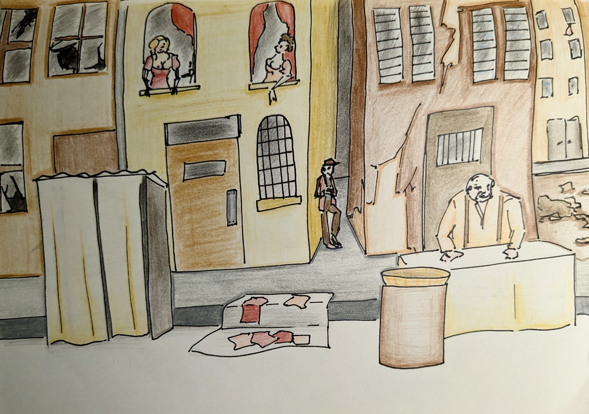
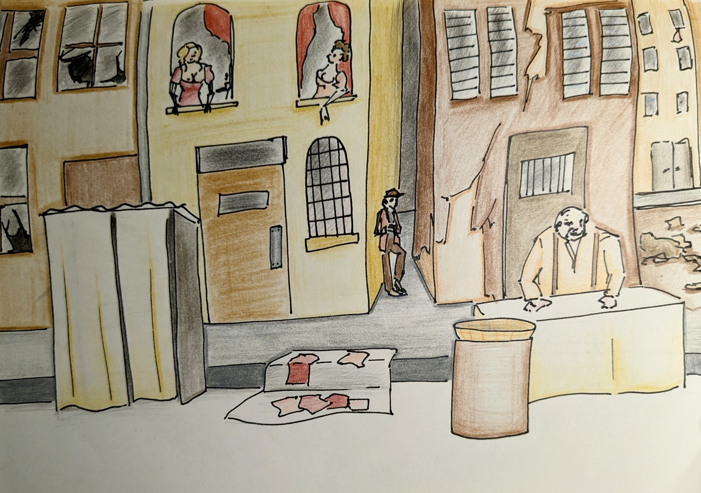

Chroniques du dernier siècle
Date : Janvier 2023
Médium utilisé : Dessin, Photoshop, Indesign, Javascript, JSON

Chroniques du dernier siècle est un jeu de rôle s'inspirant de la mythologie de Lovecraft. Le scénario se passe à Paris dans les catacombes et le 18ème arrondissement. Pour améliorer la participation des joueurs, j'ai créer un Bot qui aide au jeux. Le bot permet de lancer des dés et de garder en mémoire certain niveau. Je me suis aussi occupé du graphisme de la partie, des différents personnages et de son environnement.
Vous pouvez voir le code du projet ici
 
